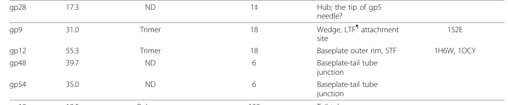

TODO: Add description for P13339
| GO Term | Evidence | Action | Reason |
|---|---|---|---|
|
GO:0098003
viral tail assembly
|
IEA
GO_REF:0000043 |
PENDING |
Summary: TODO: Review this GOA annotation
|
|
GO:0098015
virus tail
|
IEA
GO_REF:0000043 |
PENDING |
Summary: TODO: Review this GOA annotation
|
|
GO:0098025
virus tail, baseplate
|
IEA
GO_REF:0000043 |
PENDING |
Summary: TODO: Review this GOA annotation
|
|
GO:0098025
virus tail, baseplate
|
IDA
PMID:27193680 Structure of the T4 baseplate and its function in triggering... |
PENDING |
Summary: TODO: Review this GOA annotation
|
The research report should be a detailed narrative explaining the function, biological processes, and localization of the gene product. Citations should be given for all claims.
You should prioritize authoritative reviews and primary scientific literature when conducting research. You can supplement
this with annotations you find in gene/protein databases, but these can be outdated or inaccurate.
We are specifically interested in the primary function of the gene - for enzymes, what reaction is catalyzed, and what is the substrate specificity? For transporters, what is the substrate? For structural proteins or adapters, what is the broader structural role? For signaling molecules, what is the role in the pathway.
We are interested in where in or outside the cell the gene product carries out its function.
We are also interested in the signaling or biochemical pathways in which the gene functions. We are less interested in broad pleiotropic effects, except where these elucidate the precise role.
Include evidence where possible. We are interested in both experimental evidence as well as inference from structure, evolution, or bioinformatic analysis. Precise studies should be prioritized over high-throughput, where available.
The research target is Enterobacteria phage T4 gene 48, encoding baseplate tail-tube junction protein gp48 (UniProt P13339; synonyms include “baseplate-tube cap” and “gene product 48”). The evidence assembled here consistently refers to phage T4 structural protein gp48 positioned at the baseplate–tail tube junction and functioning in tail morphogenesis; no claims are drawn from unrelated “gp48” proteins in other organisms. (leiman2003structureandmorphogenesis pages 7-8, leiman2010morphogenesisofthe pages 2-5, ishimoto1988thestructureof pages 1-2)
Phage T4 is a canonical myovirus with a contractile tail. During infection, the baseplate undergoes a major conformational change (hexagonal → star), triggering tail sheath contraction that drives the tail tube through the bacterial outer membrane to form a channel for genome delivery. Quantitatively, the sheath contraction changes tail sheath length from ~925 Å to ~420 Å (with a diameter increase from ~240 Å to ~330 Å). (aksyuk2009thetailsheath pages 1-2)
In T4, gp48 and gp54 are classically described as tube initiator proteins: structural components added late in baseplate assembly that create the platform from which the major tail tube protein gp19 polymerizes to form the tail tube. (leiman2003structureandmorphogenesis pages 7-8, yap2014structureandfunction pages 6-8)
Across biochemical, genetic, and structural-assembly literature, gp48 is not described as an enzyme; rather, it is a structural assembly factor and stable virion component at the baseplate–tail tube junction.
Foundational work identified gp48 as one of three tail-associated proteins (TAPs) (genes 29, 48, 54) that remain associated with tail tubes released from the baseplate by guanidine hydrochloride, supporting that gp48 is physically and functionally coupled to the tail tube/basal region. (ishimoto1988thestructureof pages 1-2)
A key functional role is that a partially assembled baseplate cannot initiate tube formation until six copies each of gp48 and gp54 are added; after gp54 addition, 144 monomers of gp19 polymerize to form the tail tube in the classical assembly model. (ishimoto1988thestructureof pages 1-2)
Consistent with this, a later structural/morphogenesis review describes baseplate completion by attachment of 6×gp48 + 6×gp54 to the external interface between wedges and hub, where they serve as the starting point for polymerization of gp19 to form the tail tube (also reported as 144 gp19 copies in this framework). (leiman2003structureandmorphogenesis pages 7-8)
Evidence consistently places gp48 at the baseplate–tail tube junction:
- A widely cited tail morphogenesis review (Table of tail proteins) assigns gp48 to the “Baseplate-tail tube junction”. (leiman2010morphogenesisofthe pages 2-5, leiman2010morphogenesisofthe media 1eddbba7)
- Stoichiometry and placement are consistent with gp48 being part of the top-of-hub / external interface between wedges and hub region, where it attaches with gp54. (leiman2003structureandmorphogenesis pages 7-8, yap2014structureandfunction pages 6-8)
Stoichiometry is repeatedly reported as 6 copies per tail/baseplate with monomer mass about 39.7 kDa. (leiman2010morphogenesisofthe pages 2-5, leiman2010morphogenesisofthe media 1eddbba7, leiman2003structureandmorphogenesis pages 7-8)
Multiple sources converge that gp48 functions as a gp48–gp54 module at the baseplate–tube junction:
- gp48 and gp54 must be sequentially added to enable tube polymerization; both are required to initiate tail-tube assembly. (ishimoto1988thestructureof pages 1-2)
- gp48 associates with gp54 to provide the base for the tail-tube junction/assembly platform. (gonzalez2021structuralstudiesof pages 18-20)
Baseplate/tail assembly work on gp29 indicates that gp54 and gp48 are added to the top of the baseplate before gp19 polymerizes, and that they bind to gp29 as parts of tail-tube associated proteins. (lou2002theroleof pages 102-106)
Classical genetic analysis reported that nonsense mutations in gene 48 can reduce gene 54 expression by ~30-fold, consistent with strong polarity/translational coupling between the adjacent genes 48 and 54 (overlapping stop/start and lack of an independent ribosome binding site for gene 54 were suggested). This supports a functional requirement for coordinated gp48/gp54 production for correct tail assembly. (ishimoto1988thestructureof pages 7-8)
A 2024 T4-focused structural study on post-packaging genome flow reports that six coiled-coil strands of the tape-measure protein (TMP; gp29) form the innermost tail tube and are connected at the bottom end with gp48 tube and baseplate, explicitly positioning gp48 as the structural connector between the TMP-derived inner tube architecture and the baseplate. This frames gp48 not only as an assembly initiator but also as part of the structural pathway enabling genome positioning and delivery during infection-related transitions. (rao2024structuralmechanismsof pages 1-1)
A 2023 review on phage adsorption (focused on Gram-positive hosts but discussing phage tail architecture) uses the T4 gp48/gp54 pair as the canonical example of a baseplate hub (BH) / tail tube initiator module in contractile-tailed phage-like systems, illustrating the continuing role of the T4 model in interpreting contractile injection mechanisms. (leprince2023phageadsorptionto pages 1-2)
Evidence limitation: within the retrieved corpus, recent (2023–2024) sources provide updated mechanistic placement of gp48 in the tail machine (notably via TMP connectivity), but do not provide new residue-level atomic structures of gp48 itself; the gp48–gp54 complex structure is still noted as unresolved in earlier expert reviews of T4 tail assembly (not captured in evidence snippets here). Therefore, conclusions about domains (Gp48_T4-like; PF11091) cannot be independently validated from the retrieved full-text evidence and should be treated as database-derived context rather than literature-demonstrated findings in this report.
gp48 participates in a well-defined morphogenetic sequence:
1. Baseplate wedge/hub assembly progresses.
2. Baseplate completion occurs by attaching 6×gp48 + 6×gp54 at the wedges–hub interface.
3. This creates the platform for gp19 polymerization to form the tail tube (reported as 144 gp19 subunits in classic assembly frameworks).
4. Tail sheath (gp18) polymerizes around the tail tube and later contracts during infection.
This positions gp48 centrally in the pathway linking baseplate completion → tube initiation → sheath/tube assembly, which is ultimately required for infection. (leiman2003structureandmorphogenesis pages 7-8, ishimoto1988thestructureof pages 1-2, yap2014structureandfunction pages 6-8)
While the retrieved evidence does not quantify gp48-specific infection phenotypes, the broader T4 tail literature emphasizes that the contractile tail confers extremely high infection efficiency; for example, one expert review states the efficiency of T4 infection is “almost 1.0” (nearly every adsorbed particle successfully infects). This provides system-level context for why precise assembly of the tail/baseplate junction components (including gp48) is under strong functional constraint. (arisaka2016molecularassemblyand pages 1-2)
Although gp48 itself is not a therapeutic target or enzyme, its biological role is practically important because T4 tail architecture is used as a reference blueprint for:
- Contractile injection system engineering and interpretation (phage tails, tailocins/pyocins, extracellular CIS, and T6SS analogies), where “tube initiator” modules are often discussed using T4 gp48/gp54 as the canonical example. (leprince2023phageadsorptionto pages 1-2)
- Structural/mechanistic models of infection for contractile-tailed phages, where the baseplate-to-tube junction is an essential mechanical interface controlling tube deployment and genome delivery. (aksyuk2009thetailsheath pages 1-2, rao2024structuralmechanismsof pages 1-1)
The most consistent expert interpretation across decades of T4 structural biology is that gp48 is a stoichiometric, baseplate-proximal structural component whose essential functional contribution is to form (with gp54) the tube initiation/junction complex that couples a completed baseplate to subsequent tail tube (gp19) and sheath (gp18) polymerization. This is articulated in highly cited reviews and supported by classical biochemical genetics showing that tube formation does not proceed without gp48/gp54 addition. (leiman2003structureandmorphogenesis pages 7-8, ishimoto1988thestructureof pages 1-2, yap2014structureandfunction pages 6-8)
More recent structural work (2024) extends this view by embedding gp48 within a broader mechanical pathway for genome positioning and release, by placing gp48 at the connection between the TMP-derived inner tube architecture and the baseplate. (rao2024structuralmechanismsof pages 1-1)
The following table compiles the key annotation facts and evidence pointers.
| Gene/protein | Synonyms | Organism / identifier | Location in virion | Role in assembly / morphogenesis | Known interaction partners / assembly context | Quantitative data | Key supporting sources (year; URL) |
|---|---|---|---|---|---|---|---|
| gene 48 product gp48 | Baseplate tail-tube junction protein gp48; baseplate-tube cap; gene product 48 | Enterobacteria phage T4; UniProt P13339 | Baseplate–tail tube junction; attached at the top of the hub / external interface between wedges and hub; part of the platform at the proximal end of the tail tube (leiman2010morphogenesisofthe pages 2-5, leiman2003structureandmorphogenesis pages 7-8, yap2014structureandfunction pages 6-8, taylor2018contractileinjectionsystems pages 1-6, leiman2010morphogenesisofthe media 1eddbba7) | Structural tube-initiator / adapter, not an enzyme; gp48 is added late in baseplate assembly together with gp54 to complete the baseplate and create the platform that nucleates tail-tube polymerization by gp19 and supports subsequent sheath assembly by gp18 (leiman2003structureandmorphogenesis pages 7-8, ishimoto1988thestructureof pages 1-2, yap2014structureandfunction pages 6-8, taylor2018contractileinjectionsystems pages 1-6) | Directly/functionally associated with gp54; required before gp19 tube polymerization; located near gp25 (sheath assembly initiator) and linked to hub/wedge structures; recent T4 structural work places gp48 at the bottom end of the tape-measure protein (gp29/TMP) tube where it connects the inner tube to the baseplate (ishimoto1988thestructureof pages 1-2, yap2014structureandfunction pages 6-8, taylor2018contractileinjectionsystems pages 1-6, rao2024structuralmechanismsof pages 1-1) | Monomer mass ~39.7 kDa; stoichiometry 6 copies per tail/baseplate; after sequential addition of six gp48 and six gp54, 144 gp19 monomers polymerize to form the tail tube; T4 tail length ~98 nm in the classical assembly study (leiman2010morphogenesisofthe pages 2-5, leiman2003structureandmorphogenesis pages 7-8, ishimoto1988thestructureof pages 1-2, leiman2010morphogenesisofthe media 1eddbba7) | Leiman et al., 2010, Virology Journal — https://doi.org/10.1186/1743-422X-7-355 ; Leiman et al., 2003, Cell Mol Life Sci — https://doi.org/10.1007/s00018-003-3072-1 ; Ishimoto et al., 1988, Virology — https://doi.org/10.1016/0042-6822(88)90622-8 ; Yap & Rossmann, 2014, Future Microbiology — https://doi.org/10.2217/fmb.14.91 ; Taylor et al., 2018, Mol Microbiol — https://doi.org/10.1111/mmi.13921 ; Rao, 2024, recent T4 structural study cited in retrieved context (leiman2010morphogenesisofthe pages 2-5, leiman2003structureandmorphogenesis pages 7-8, ishimoto1988thestructureof pages 1-2, yap2014structureandfunction pages 6-8, taylor2018contractileinjectionsystems pages 1-6, rao2024structuralmechanismsof pages 1-1) |
Table: This table compiles the main functional annotation facts for Enterobacteria phage T4 gp48 (gene 48; UniProt P13339), including localization, assembly role, interaction partners, and quantitative stoichiometric data. It is useful as a compact evidence-backed reference for the protein’s structural role in T4 tail morphogenesis.
Within the retrieved literature excerpts, gp48’s domain architecture (Gp48_T4-like; PF11091/T4_tail_cap) is not explicitly discussed, and an atomic structure for gp48 (or the gp48–gp54 complex) is not directly provided. For a deeper annotation, recommended next steps include (i) targeted retrieval of recent high-resolution structural papers specifically resolving the gp48–gp54 tube initiator complex, and (ii) direct curation from InterPro/Pfam entries cross-linked to P13339, followed by structural homology modeling and mapping to known baseplate/tube interfaces.
References
(leiman2003structureandmorphogenesis pages 7-8): P. G. Leiman, S. Kanamaru, V. V. Mesyanzhinov, F. Arisaka, and M. G. Rossmann. Structure and morphogenesis of bacteriophage t4. Cellular and Molecular Life Sciences CMLS, 60:2356-2370, Nov 2003. URL: https://doi.org/10.1007/s00018-003-3072-1, doi:10.1007/s00018-003-3072-1. This article has 359 citations.
(leiman2010morphogenesisofthe pages 2-5): Petr G Leiman, Fumio Arisaka, Mark J van Raaij, Victor A Kostyuchenko, Anastasia A Aksyuk, Shuji Kanamaru, and Michael G Rossmann. Morphogenesis of the t4 tail and tail fibers. Virology Journal, 7:355-355, Dec 2010. URL: https://doi.org/10.1186/1743-422x-7-355, doi:10.1186/1743-422x-7-355. This article has 319 citations and is from a peer-reviewed journal.
(ishimoto1988thestructureof pages 1-2): Lance K. Ishimoto, Karyn S. Ishimoto, Antonio Cascino, Marilena Cipollaro, and Frederick A. Eiserling. The structure of three bacteriophage t4 genes required for tail-tube assembly. Virology, 164 1:81-90, May 1988. URL: https://doi.org/10.1016/0042-6822(88)90622-8, doi:10.1016/0042-6822(88)90622-8. This article has 17 citations and is from a peer-reviewed journal.
(aksyuk2009thetailsheath pages 1-2): Anastasia A Aksyuk, Petr G Leiman, Lidia P Kurochkina, Mikhail M Shneider, Victor A Kostyuchenko, Vadim V Mesyanzhinov, and Michael G Rossmann. The tail sheath structure of bacteriophage t4: a molecular machine for infecting bacteria. The EMBO Journal, 28:821-829, Feb 2009. URL: https://doi.org/10.1038/emboj.2009.36, doi:10.1038/emboj.2009.36. This article has 150 citations.
(yap2014structureandfunction pages 6-8): Moh Lan Yap and Michael G Rossmann. Structure and function of bacteriophage t4. Future microbiology, 9 12:1319-27, Dec 2014. URL: https://doi.org/10.2217/fmb.14.91, doi:10.2217/fmb.14.91. This article has 282 citations and is from a peer-reviewed journal.
(leiman2010morphogenesisofthe media 1eddbba7): Petr G Leiman, Fumio Arisaka, Mark J van Raaij, Victor A Kostyuchenko, Anastasia A Aksyuk, Shuji Kanamaru, and Michael G Rossmann. Morphogenesis of the t4 tail and tail fibers. Virology Journal, 7:355-355, Dec 2010. URL: https://doi.org/10.1186/1743-422x-7-355, doi:10.1186/1743-422x-7-355. This article has 319 citations and is from a peer-reviewed journal.
(gonzalez2021structuralstudiesof pages 18-20): Brenda Gonzalez. Structural studies of the phage g capsid and helical tail sheath using cryo-em. ArXiv, Aug 2021. URL: https://doi.org/10.25394/pgs.15156780.v1, doi:10.25394/pgs.15156780.v1. This article has 0 citations.
(lou2002theroleof pages 102-106): Y Lou. The role of baseplate protein gp29 in bacteriophage t4 tail assembly. Unknown journal, 2002.
(ishimoto1988thestructureof pages 7-8): Lance K. Ishimoto, Karyn S. Ishimoto, Antonio Cascino, Marilena Cipollaro, and Frederick A. Eiserling. The structure of three bacteriophage t4 genes required for tail-tube assembly. Virology, 164 1:81-90, May 1988. URL: https://doi.org/10.1016/0042-6822(88)90622-8, doi:10.1016/0042-6822(88)90622-8. This article has 17 citations and is from a peer-reviewed journal.
(rao2024structuralmechanismsof pages 1-1): V Rao. Structural mechanisms of post-packaging genome flow in bacteriophage t4. Unknown journal, 2024.
(leprince2023phageadsorptionto pages 1-2): Audrey Leprince and Jacques Mahillon. Phage adsorption to gram-positive bacteria. Viruses, 15:196, Jan 2023. URL: https://doi.org/10.3390/v15010196, doi:10.3390/v15010196. This article has 104 citations.
(arisaka2016molecularassemblyand pages 1-2): Fumio Arisaka, Moh Lan Yap, Shuji Kanamaru, and Michael G. Rossmann. Molecular assembly and structure of the bacteriophage t4 tail. Biophysical Reviews, 8:385-396, Nov 2016. URL: https://doi.org/10.1007/s12551-016-0230-x, doi:10.1007/s12551-016-0230-x. This article has 55 citations and is from a peer-reviewed journal.
(taylor2018contractileinjectionsystems pages 1-6): Nicholas M. I. Taylor, Mark J. van Raaij, and Petr G. Leiman. Contractile injection systems of bacteriophages and related systems. Molecular Microbiology, 108:6-15, Apr 2018. URL: https://doi.org/10.1111/mmi.13921, doi:10.1111/mmi.13921. This article has 167 citations and is from a domain leading peer-reviewed journal.

id: P13339
gene_symbol: P13339
product_type: PROTEIN
status: INITIALIZED
taxon:
id: NCBITaxon:10665
label: Enterobacteria phage T4
description: 'TODO: Add description for P13339'
existing_annotations:
- term:
id: GO:0098003
label: viral tail assembly
evidence_type: IEA
original_reference_id: GO_REF:0000043
review:
summary: 'TODO: Review this GOA annotation'
action: PENDING
- term:
id: GO:0098015
label: virus tail
evidence_type: IEA
original_reference_id: GO_REF:0000043
review:
summary: 'TODO: Review this GOA annotation'
action: PENDING
- term:
id: GO:0098025
label: virus tail, baseplate
evidence_type: IEA
original_reference_id: GO_REF:0000043
review:
summary: 'TODO: Review this GOA annotation'
action: PENDING
- term:
id: GO:0098025
label: virus tail, baseplate
evidence_type: IDA
original_reference_id: PMID:27193680
review:
summary: 'TODO: Review this GOA annotation'
action: PENDING
references:
- id: GO_REF:0000043
title: Gene Ontology annotation based on UniProtKB/Swiss-Prot keyword mapping
findings: []
- id: PMID:27193680
title: Structure of the T4 baseplate and its function in triggering sheath contraction.
findings: []
{kind=link}